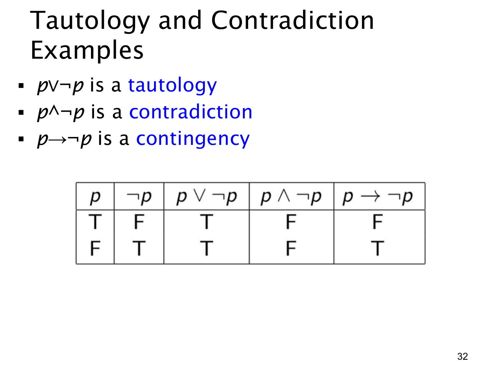

L1.1 · 第 32 页讲解原文
查看这一页课件

用真值表实际分类三个式子
这一页把上一页的三个类别放在同一张真值表里。只有一个命题变量 p，所以只需检查 p=T 和 p=F 两行：
| p | ¬p | p∨¬p | p∧¬p | p→¬p |
|---|---|---|---|---|
| T | F | T | F | F |
| F | T | T | F | T |
p∨¬p 的结果列全是 T，所以是永真式：p 本身真，或它的否定真，总有一个成立。p∧¬p 的结果列全是 F，所以是矛盾式：不能同时有 p 与“非 p”。
p→¬p 则一行假、一行真，所以是偶然式。当 p 真时，结论 ¬p 假，条件命题为假；当 p 假时，前提不成立，条件命题依定义为真。它听起来像“如果 p，那么不是 p”，但不能只凭语感把它认作永假；条件命题的假前提行仍需按真值表计算。
做类似分类题时，先列齐所有输入组合，再逐列计算，最后看目标列是全 T、全 F，还是两种结果都有。